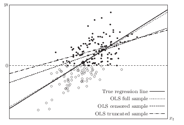

7 Censored, truncated or selected data
7.1 Compare three different cases
A sample is truncated if some observations are systematically excluded from the sample. For example, suppose we are interested in relationship between people’s income(\(y\)) and education(\(x\)). If we have observations of both \(y\) and \(x\) only for people whose income is above $20,000 per year, then we have a truncated sample. A sample is censored if no observations have been systematically excluded but some of information contained in them has been suppressed. In other words, in a truncated sample, you don’t have observations which have been truncated; while in a censored sample, you do have observations but you don’t have full information. The idea of “censoring” is that some data above or below a threshold are mis-reported at the threshold. If we use the same example of people’s income, if we don’t observe people’s income (\(y\)) and education(\(x\)) with income lower than $20,000 per year, then we have a truncated sample. If we have observations of \(x\) for people whose income above AND below that limit, but no information on exactly how much their income is for those whose income below the limit (only thing we know is that it’s lower than $20,000 per year), then we have a censored sample.
The problem of sample selection arises when no observations have been systematically excluded but some information has been suppressed, just like censoring. However, in sample selection problems, we have information on how the “selection” happens. In censoring, usually a constant “threshold” is set. Observations on dependent variable for those above (or below) that criteria are missing. Using the income example again, the threshold is set to be $20,000, we have no information on exactly how much their income is for those whose income below the limit (only thing we know is that it’s lower than $20,000 per year). When we have a third variable that determines the censoring situation, then we call it sample selection. For example, we have observed only union member’s information on income, but we observe information on education for everybody, including union members or non-members. In this example, union membership is an additional variable that “selects” the sample which are involved in the estimation of effect of education on income.
7.2 An illustration for truncated or censored data
Consider the model \[ y_t^0=\beta_1 +\beta_2 x_t +u_t, \ u_t \sim NID(0, \sigma^2), \] where \(y_t^0\) is a latent variable. We actually observe \(y_t\), which differs from \(y_t^0\) , because it’s either truncated or censored.
Suppose that censorship or truncation occurs whenever \(y_t^0\) is less than 0. Clearly, the larger the error term \(u_t\), the larger is \(y_t^0\) and thus the greater must be the probability that \(y_t^0 \geq 0\). This probability also depends on \(x_t\). So for the sample we observe, \(u_t\) does not have conditional mean 0 and is not uncorrelated with \(x_t\). OLS using truncated or censored samples (OLS of \(y_t\) on \(x_t\)) yields biased and inconsistent estimators. Normally we would like to draw inference on the population which is represented by the full sample. Shown in figure 1, ideally we would have the OLS regression line (if we had the full sample), which is very close to the “true” regression line (which is the mechanism generates the data). We would have the “OLS censored sample” line if we run OLS on the censored sample; we would have “OLS truncated sample” if we run OLS on the truncated sample. It shows that both of them are severely biased from the “true” regression line.
Here is a graph to illustrate from Davidson and MacKinnon.

7.3 Truncated Models
For truncated data, a consistent estimator comes from maximum likelihood estimator (MLE). If we assume the error terms in the latent variable model has a known distribution, then MLE estimator can be applied. The most popular choice is Gaussian. \[ \begin{aligned} \mbox{Pr}(y_t^0 \geq 0) & = \mbox{Pr} ({\bf X}_t \beta +u_t \geq 0) \\ & = 1- \mbox{Pr} (u_t/\sigma < - {{\bf X}_t \beta} / \sigma) \\ & = 1- \Phi (-{{\bf X}_t \beta} / \sigma)=\Phi ({{\bf X}_t \beta} / \sigma) \end{aligned} \]
The density of \(y_t\) is proportional to the density of \(y_t^0\) when \(y_t^0 \geq 0\) and \(y_t\) is observed. It is 0 elsewhere. The factor of proportionality, which is needed to ensure that the density integrates to unity, is the inverse of the probability that \(y_t^0 \geq 0\). The density of \(y_t\) can be written as \[ \frac{\sigma^{-1} \phi ((y_t - {\bf X}_t \beta)/\sigma)}{\Phi ({\bf X}_t \beta / \sigma)} \]
This implies the log-likelihood function, \[ \ell ({\bf y, \beta}, \sigma)=- \frac{n}{2} \log(2 \pi) -n \log(\sigma) - \frac{1}{2 \sigma^2} \sum_{t=1}^n(y_t-{\bf X}_t \beta)^2 - \sum_{t=1}^n \log \Phi ({\bf X}_t \beta / \sigma). \]
This can be estimated by MLE. In Stata, truncreg is the command to do truncated regression model.
7.4 Censored Models
The most popular censored model is Tobit model. \[ \begin{aligned} y_t^0 & = {\bf X}_t \beta +u_t, \quad u_t \sim NID(0, \sigma^2) \\ y_t & = y_t^0 \ \mbox{if} \ y_t^0 > 0; \ y_t=0 \ \mbox{otherwise}. \end{aligned} \]
We see that \[ \begin{aligned} \mbox{Pr}(y_t= 0) & = \mbox{Pr} (y_t^0 \leq 0) = \mbox{Pr} ({\bf X}_t \beta +u_t \leq 0) \\ & = \mbox{Pr} (u_t/\sigma < - {{\bf X}_t \beta} / \sigma) \\ & = \Phi (-{{\bf X}_t \beta} / \sigma) \end{aligned} \]
The contribution to the log-likelihood function made by observations with \(y_t=0\) is \[ \ell_t(y_t, \beta, \sigma) = \log \Phi (-{\bf X}_t \beta/\sigma). \]
If \(y_t\) is positive, the contribution to the log-likelihood is the logarithm of the density, \[ \log(\frac{1}{\sigma} \phi ((y_t - {\bf X}_t \beta) / \sigma )). \]
The log-likelihood function of the tobit model is \[ \sum_{y_t=0} \log \Phi (-{\bf X}_t \beta/\sigma) + \sum_{y_t>0} \log(\frac{1}{\sigma} \phi ((y_t - {\bf X}_t \beta)/\sigma ))) \]
This can be estimated by MLE. In Stata, tobit or intreg can be used for censoring models.
7.5 Sample Selection
The sample selection models differ from censored model in that it involves a different variable (from \(y\) itself) to determine the censorship (selection).
Suppose that \(y_t^0\) and \(z_t^0\) are two latent variables, generated by the bivariate process
\[ \begin{bmatrix} y_t^0 \\ z_t^0 \end{bmatrix} =\begin{bmatrix} {\bf X}_t \beta \\ {\bf W}_t \gamma \end{bmatrix}+ \begin{bmatrix} u_t \\ v_t \end{bmatrix}, \ \begin{bmatrix} u_t \\ v_t \end{bmatrix} \sim NID({\bf 0}, \begin{bmatrix} \sigma^2 & \rho \\ \rho & 1 \end{bmatrix}) \]
We observe \(y_t\) and \(z_t\): \[ y_t = y_t^0 \ \mbox{if} \ z_t^0 > 0; \ y_t \ \mbox{unobservable otherwise}; \\ z_t = 1 \ \mbox{if} \ z_t^0 > 0; \ z_t=0 \ \mbox{otherwise}. \]
There are two types of observations, ones we observe \(y_t=y_t^0\) and \(z_t=1\), along with both \(\bf X_t\) and \(\bf W_t\), and ones we observe only \(z_t=0\) and \(\bf W_t\).
Each observation contributes to the likelihood function by \[ I(z_t=0)\mbox{Pr}(z_t=0)+I(z_t=1)\mbox{Pr}(z_t=1)f(y_t^0 | z_t=1), \]
Under the normality assumption, \[ u_t=\rho v_t+e_t \] where \(e_t\) is independent of \(v_t \sim N(0,1)\). A useful fact about the standard normal distribution is that \[ {\rm E} (v_t | v_t>-x)=\lambda (x) =\frac{\phi(x)}{\Phi(x)} \] and the function \(\lambda(x)\) is called the inverse Mills ratio.
The log-likelihood function can be shown to be \[ \sum_{z_t=0} \log \Phi(-{\bf W}_t \gamma)+\sum_{z_t=1} \log(\frac{1}{\sigma} \phi ((y_t - {\bf X}_t \beta)/\sigma)) + \sum_{z_t=1} \log \Phi (\frac{{\bf W}_t \gamma+\rho (y_t-{\bf X}_t \beta)/\sigma}{(1-\rho^2)^{1/2}}) \]
So this model can be estimated by MLE.
It is also popular to use Heckman’s two-step method.
Heckman’s method is based on the fact that the original latent model can be rewritten as \[ y_t={\bf X}_t \beta + \rho v_t +e_t \]
Here the error term \(u_t\) is divided into two parts, one perfectly correlated with \(v_t\), and one independent of \(v_t\).
In the first step, an ordinary probit model is used to obtain consistent estimates \(\hat \gamma\) of the parameters of the selection equation.
In the second step, the unobserved \(v_t\) is replaced by the selectivity regressor \(\frac{\phi({\bf W}_t \hat \gamma)}{\Phi({\bf W}_t \hat \gamma)}\).
Therefore, the regression becomes \[ y_t={\bf X}_t \beta + \rho \frac{\phi({\bf W}_t \hat \gamma)}{\Phi({\bf W}_t \hat \gamma)} + e_t \]
Or, \[ y_t={\bf X}_t \beta + \rho \hat \lambda_t + e_t \]
One thing to note in Heckman model is that in many situations, \(\hat \lambda\) is believed to be highly collinear with \(\bf X_t\), if \(\bf W_t\) is the same as \(\bf X_t\). However, the model can still be estimated due to the nonlinearity of the model. Nevertheless, it becomes a regular practice to require \(\bf W_t\) contains at least one extra variable than \(\bf X_t\), which is sometimes called exclusion restriction. In many situations, \(\bf W_t\) contains all \(\bf X_t\) variables, and at least one more variable. The reason to contain all \(\bf X_t\) variables is because the selection is “endogenous” in the sense that \(y_t\) is a factor in determining selection; this is modeled by including all the \(\bf X_t\)’s.
In Stata, heckman is the command to do sample selection models. It has options to do a Heckman two-step estimation or MLE estimation. Usually MLE is preferred.
7.6 Switching Regression (Treatment-Effects Model)
There is another situation that is similar to sample selection model: we observe \(y\) for \(z=1\) and \(z=0\). In the example of effect of education on income, we observe both union member’s income and non-member’s income. In this case, we have switching regression model or treatment-effect model. The treatment effect model estimates the effect of an endogenous binary treatment\(z_t\) (treatment, program participation, etc.) on a continuous, fully-observed variable,\(y_t\), conditional on the independent variables \(x_t\) and \(w_t\).
Suppose \(z_t^0\) is a latent variable.
\[ \begin{bmatrix} y_t \\ z_t^0 \end{bmatrix} =\begin{bmatrix} {\bf X}_t \beta \\ {\bf W}_t \gamma \end{bmatrix}+ \delta \begin{bmatrix} {z_t} \\ 0 \end{bmatrix} + \begin{bmatrix} u_t \\ v_t \end{bmatrix}, \ \begin{bmatrix} u_t \\ v_t \end{bmatrix} \sim NID({\bf 0}, \begin{bmatrix} \sigma^2 & \rho \\ \rho & 1 \end{bmatrix}) \]
We observe \(y_t\) and \(z_t\): \[ z_t = 1 \ \mbox{if} \ z_t^0 > 0; \ z_t=0 \ \mbox{otherwise}. \]
Notice that the only difference between the switching regression and selection model is that we observe \(y_t\) when \(z_t=0\) and \(z_t=1\). It’s not a selection, but a regime switching.
Both Stata (etregress in version 14) and SAS (qlim) can estimate the switching regression. The default is by MLE.